You deserve better compression.
Your files are nobody else's business. Compakt runs entirely on your own machine — no sockets, no telemetry, no account, nothing uploaded to be processed — and when you ask it to encrypt, it encrypts the file listing too, which most archivers leave readable to anyone holding the archive.
How it works
Every file is inspected before anything is compressed — magic bytes first, then the content itself: entropy, printable ratio, line structure, delimiter regularity. The extension is consulted last, as a tiebreaker, and is never allowed to override what the bytes say.
A SQLite database renamed notes.txt is packed as a
database. Already-compressed data wearing a misleading name is stored
raw instead of being pointlessly recompressed, because its measured
entropy gives it away.
The index is written at both ends of the file, so damage to either end is recovered from the other.
With a password set, the index itself is encrypted — unlike ZIP, which leaves every filename, path and size readable to anyone holding the file.
No plaintext reaches your disk before its AES-256-GCM tag verifies.
Identical input produces a byte-identical archive on any machine. Useful in build pipelines, and for proving two archives hold the same thing.
Ed25519 signatures. Anyone with your public key can confirm an archive came from you and has not been altered since.
Everything structural is defined in format 1.0. Unknown feature flags are rejected loudly rather than guessed at.
Command line
Everything the window does, the pakt command does. On
Linux the command line is the product — there is no
window.
# create, extract, list, check
pakt c notes/ report.pdf -o backup.pakt
pakt x backup.pakt -d restored/
pakt l backup.pakt
pakt verify backup.pakt
Add -p to encrypt, or to open an encrypted archive — it
prompts rather than taking the password on the command line, where
every other process on the machine could read it. Add
--json to any read command for output a script can parse.
Exit codes are specific and stable, so a CI job can tell a wrong
password from a corrupt archive from a refused entry.
Benchmarks
Both measured against 7-Zip -mx9. Every corpus is public
or seeded from a fixed value, and benchmarks/run.py
reproduces this table on your own machine.
| Corpus | Compakt | 7-Zip -mx9 | Result |
|---|---|---|---|
| silesia — 202 MB, mixed | 0.2288 · 53.7s | 0.2297 · 83.2s | 0.4% smaller, and faster |
| enwik8 — 95 MB, one text file | 0.2545 · 80.3s | 0.2480 · 81.0s | 2.6% behind |
silesia is the corpus chosen precisely because it switches off every structural advantage Compakt has, so being ahead there is the result that means something. enwik8 is a single large text file, where splitting into 64 MiB blocks costs more than the routing wins back. That trade was made deliberately, and it is not free.
On photos and video: those are already compressed, so no archiver — this one included — will shrink them meaningfully. Compakt detects that and stores them raw rather than wasting your time pretending otherwise.
Local only
Compakt opens no network sockets, sends no telemetry and has no update checker. Every library in the stack is a pure codec — arithmetic on bytes, nothing more.
You do not have to take that on trust:
A security claim is only worth making if it can be falsified from outside the process. That is the only kind this project makes.
Install
Download Compakt_Setup.exe and run it. It installs for
your user only, so there is no administrator prompt, and it registers
the .pakt type, an Explorer right-click entry, and the
pakt command on your PATH.
It will, and here is exactly why. The installer is not signed with a code-signing certificate. Windows shows that warning for every unsigned installer regardless of what is inside it — it is a statement about a certificate, not about the file. Compakt is built by one person, and a certificate costs money that is going into the tool instead.
So don't trust me. Check it. Every release publishes a SHA-256 for each file:
certutil -hashfile Compakt_Setup.exe SHA256
Compare that against SHA256SUMS on the release page. If
they match, the file you have is the file that was published. To get
past the dialog: More info → Run anyway.
The pakt command line only — no window. Built against
glibc 2.28, so it runs on Debian 10, Ubuntu 18.04, RHEL 8 and anything
newer. Verified on a clean Ubuntu 22.04.
# Debian, Ubuntu and derivatives
sudo apt install ./compakt_1.0.0_amd64.deb
# any distribution
tar xzf pakt-1.0.0-linux-x86_64.tar.gz
./pakt-1.0.0-linux-x86_64/pakt --version
# verify what you downloaded
sha256sum -c SHA256SUMS
There is deliberately no curl … | sh installer. Piping a
remote script straight into a shell is precisely the habit this tool
argues against.
Licensing
The format is free forever. The application is open. One file is not.
| Component | Licence |
|---|---|
.pakt format spec + reference decoder |
Apache-2.0 |
| Detector, extractor, cryptography, socket guard, GUI, CLI, reference encoder | MPL-2.0 |
| The routing engine — the per-block codec decision | proprietary |
Everything that could affect your safety is open and auditable. What is closed is one file deciding which codec to call, which has no bearing on whether Compakt is trustworthy or on your ability to read your own archives.
No part of reading your archive is withheld. Where the engine trains a compression dictionary, it trains it from your own files at pack time and writes it into the archive, because the format requires it: “Dictionaries, if used, MUST be embedded, never referenced by id.” There is no dictionary you need and cannot have, and there never can be one.
The format is free. Implement .pakt in
any language, for any purpose, commercially or not, without asking.
Every archive ever written stays readable by anyone, forever, whatever
happens to this project.